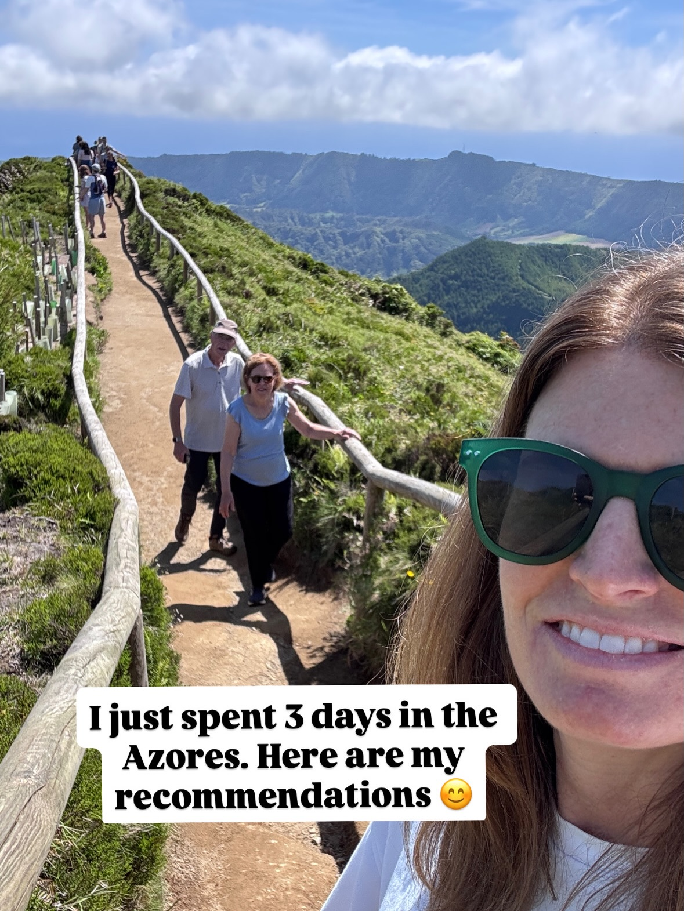
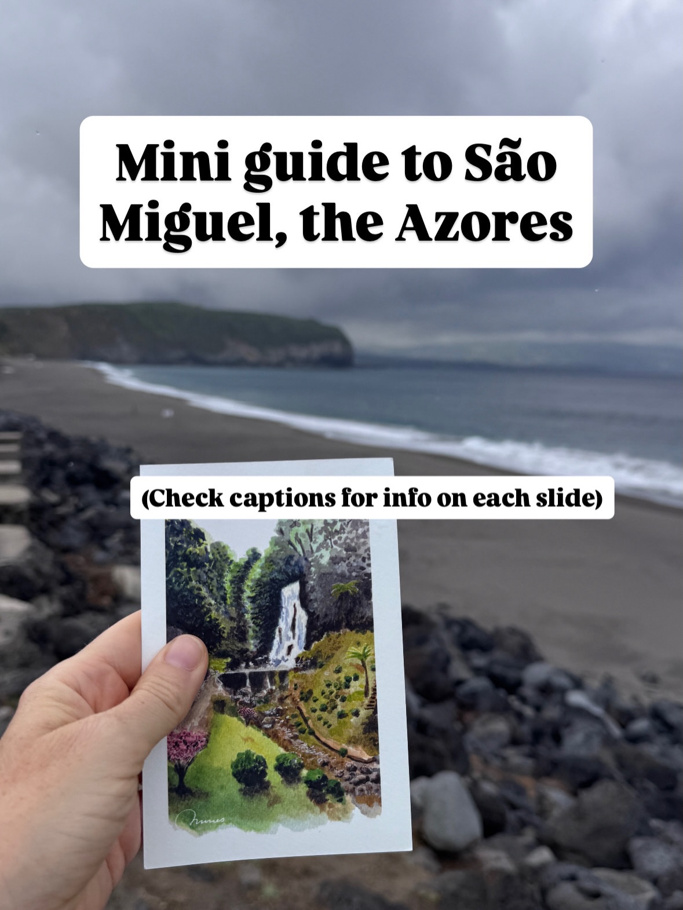
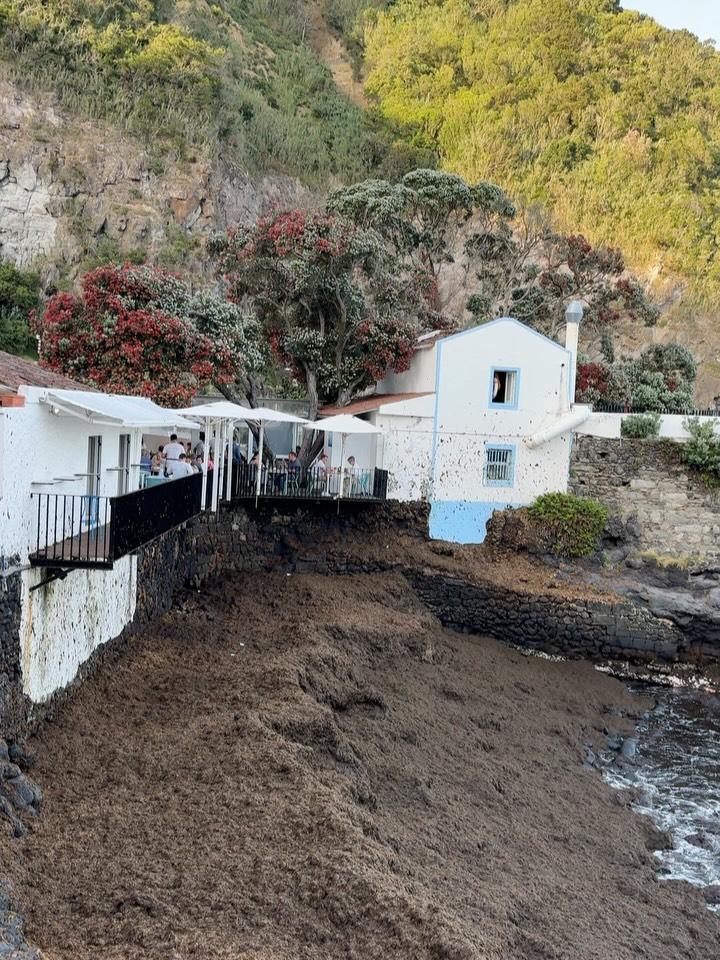
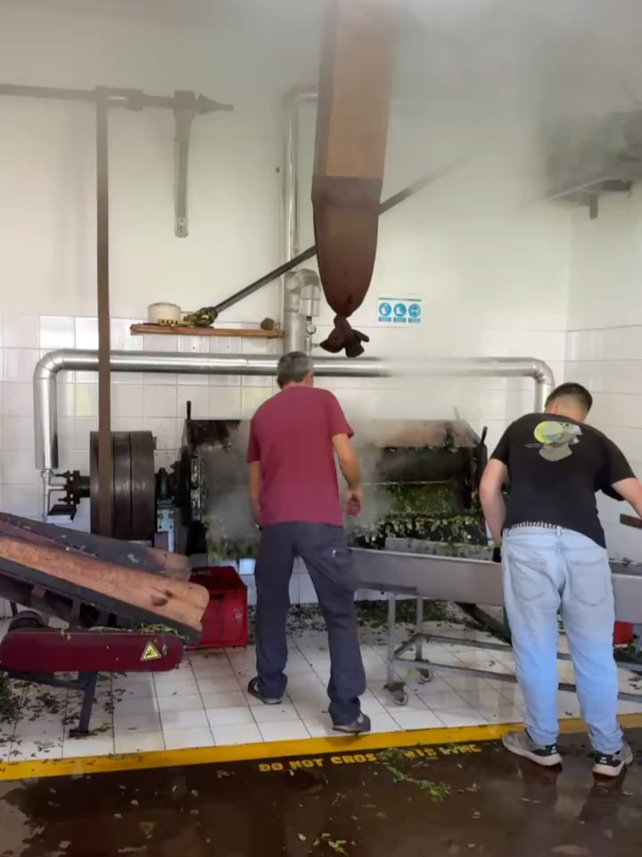
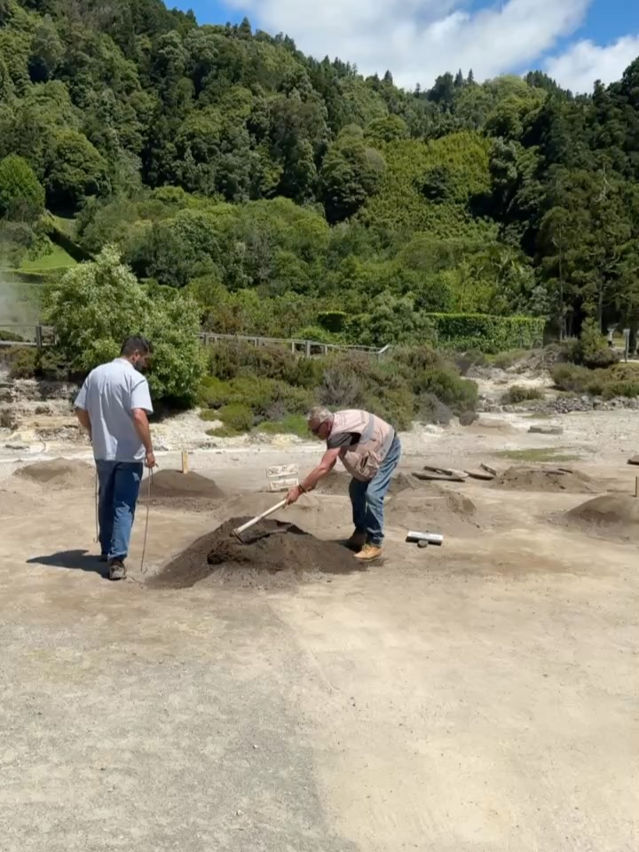
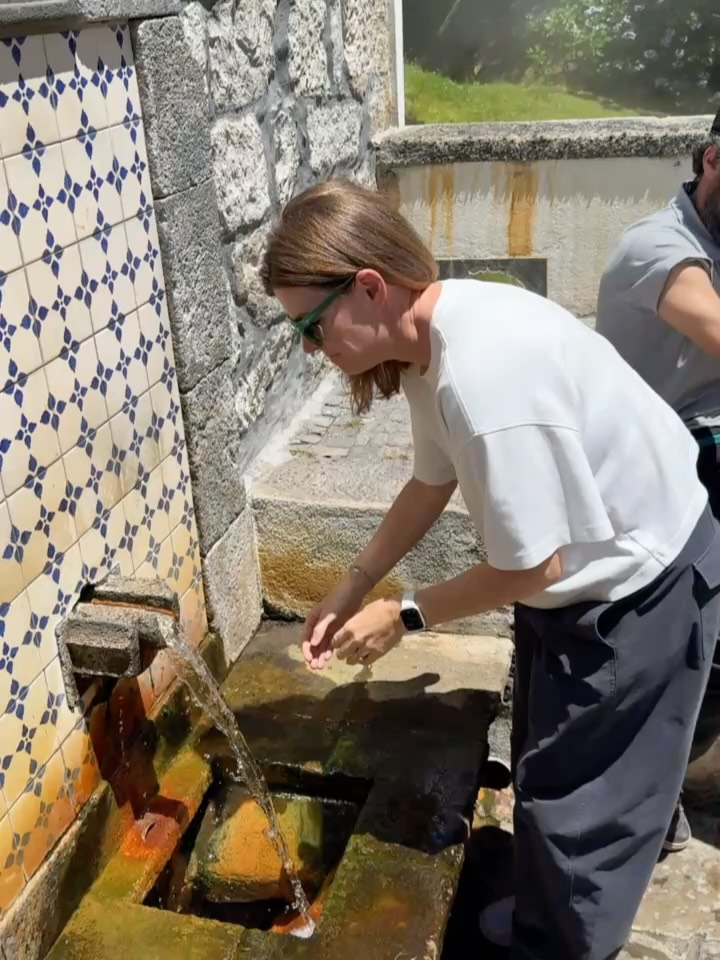
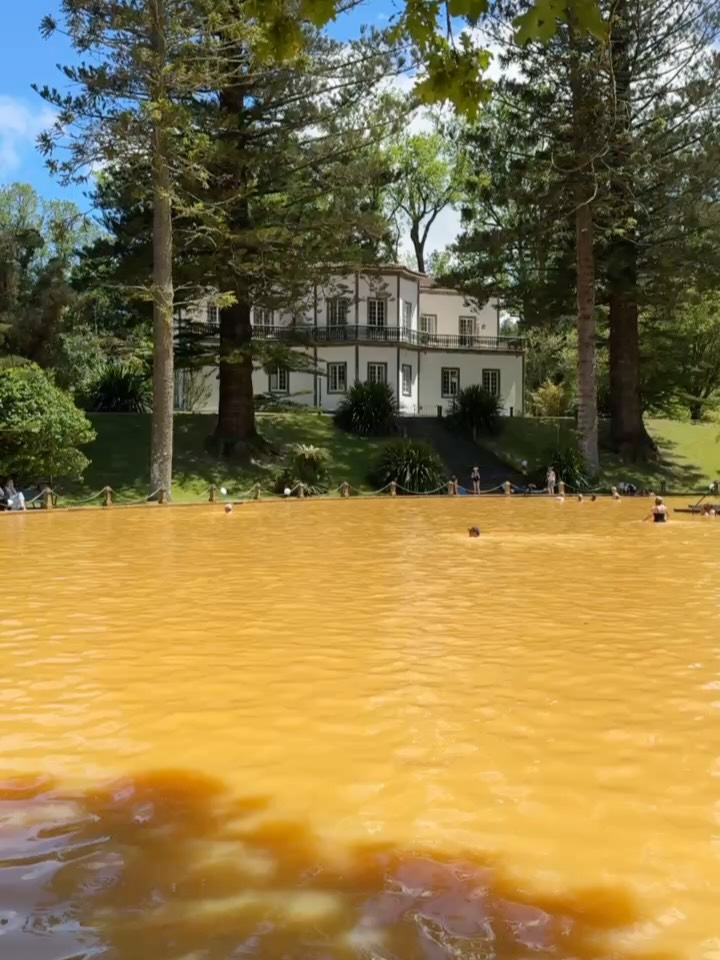
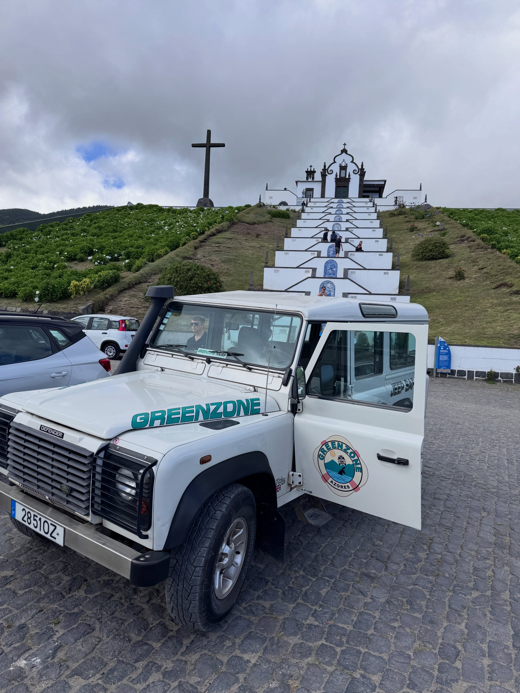

I just spent 3 days in the Azores | Mini guide to São Miguel, the Azores (Check captions for ... | DO NOT CROSS THIS WIRE | Two men are working with shovels on small mounds of dark ... | DEFENDER GREENZONE 28510Z GREENZONE AZORES
Caption
Be sure to save this post if you’re heading to Azores! I just met up with my parents in the Azores. I just saw São Miguel bit there are 9 islands in this archipelago. My parents also went to Pico, Faial and Terceira. Here is everything we did that I’d recommend. Sete Cidades. The best overlook in my opinion is Miradoura da Grota do Inferno. Hydrangeas were in full bloom along the roads. Highly recommend scheduling your trip around the hydrangeas (mid June through July). Top meal was here at Bar Calouna for me. Excellent grilled fish and delightful setting. No reservations but worth it! Gorreana Tea Plantation is the oldest in Europe and really interesting to see how tea is harvested and processed. In Furnas you can eat Cozida, a stew that is cooked for 6 hours underground using geothermal activity. Furnas also has water spouts you can try. Each one has a different flavor and properties. These hot springs in Furnas are rich in iron (obviously) and located in the middle of a botanical garden! We did a full day jeep tour to see Furnas etc and I’d highly recommend it! Comment “jeep” for the exact one we did. Parque Natural da Ribeira dos Caldeirões Is really beautiful with waterfalls and restored mills. You can also stay there which I think would be really fun for a night! I loved the architecture in São Miguel! Highly recommend grabbing a sandwich and finding a scenic overlook for lunch (they’re everywhere)! This one was just south of Nordeste. TukáTulá Beach Bar on Ribeira Grande was a great spot for a drink and we also had lunch here! Pineapple cake at the pineapple plantation in Ponta Delgada. It was my parents 52nd wedding anniversary while we were there! 💕💕💕 We went to Quinta dos Sabores which I thought was fine, but I’m more of a grilled fish by the ocean girl. Tried limpets for the first time. They’re a type of barnacle/mussel famous in Azores and in season May through September. Really tasty! We stayed at the cutest boutique hotel in Ponta Delgada, which was a great base for adventure. I’ll send you the link if you comment “hotel” Weather changes fast here. Be sure to check the Spot Azores live webcams to decide where to






